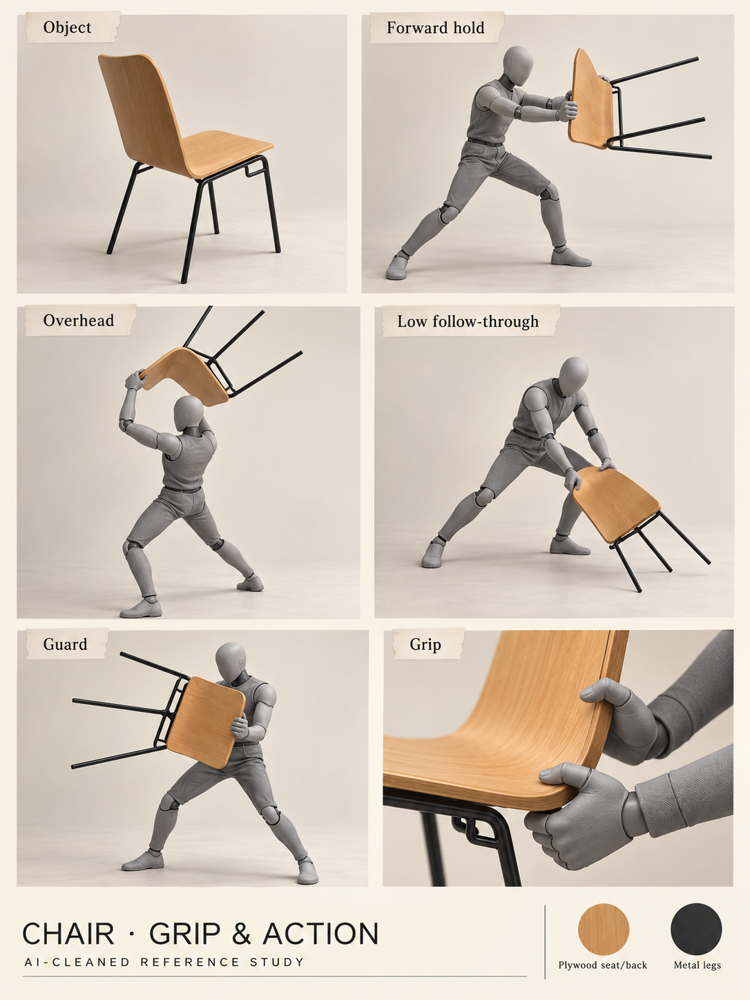

AI-cleaned reference · Not runtime art
Chair · grip and action
What the photos establish
Possible game use
What still needs review
Open this study in MarkdownWinCS / Reference review / 23 October 2026
Eight new object collages, thirteen complete API transcripts, and a proposal to discuss.
Loading the reference library…

AI-cleaned reference · Not runtime art
Discussion draft / Decisions and alternatives
A student enters a campus distorted by a fictional quantum-computing experiment. Everyday equipment becomes useful; a friendly plush guide may be gaining more from each solved anomaly than the student realizes. Humor survives as the familiar becomes uncanny. No gore or apocalypse is needed.
Choose a first scene, readable movement, one chair strike, one threat, one anomaly transfer or visual fault, a payoff and restart. Add levels only after timing a complete first loop.
Main conduit to new areas/upgrades, or fast travel? A short touch/crash-spin can serve either. Literal mirrored geometry and slide tunnels are alternatives, not combined requirements.
Attached companion with charges, or intermittent trader? The absorption/growth/betrayal thread is promising; the mechanics and reveal timing need a decision.
“Spooky outside” is reported in the meeting. AI/freestyle remarks conflict. Confirm the organizer’s terms. A collage, connected route graph or generated pose does not prove a playable mechanic.
Read the source, not just the summary
All thirteen use the OpenAI Audio Transcriptions API. The earlier ten have been retranscribed. Each recording has a summary and complete readable text; audio stays outside Git. Paragraph IDs are reading anchors, not timestamps. Speaker identities are unassigned.
A08 has disputed recognition of “recommend” / “not recommend.” The transcript records the disagreement; later written scope instructions take precedence.